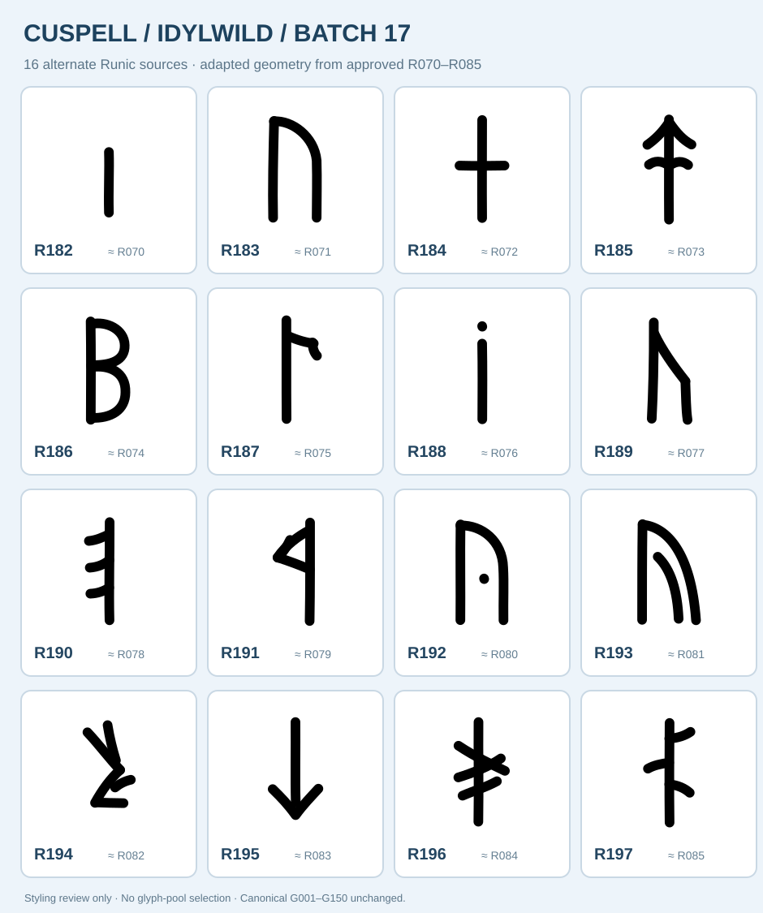
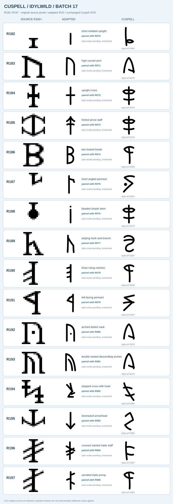
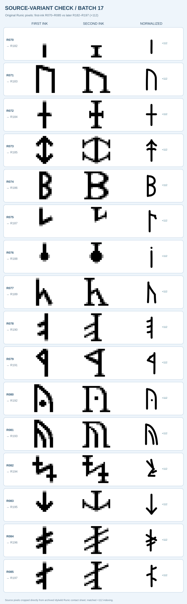

Editable SVGs share the approved R070–R085 silhouettes while preserving original source references. Visual review and final glyph inventory selection are separate decisions.
Adapted glyphs

Original / Adapted / Existing Cuspell

First/second ink source pairs
